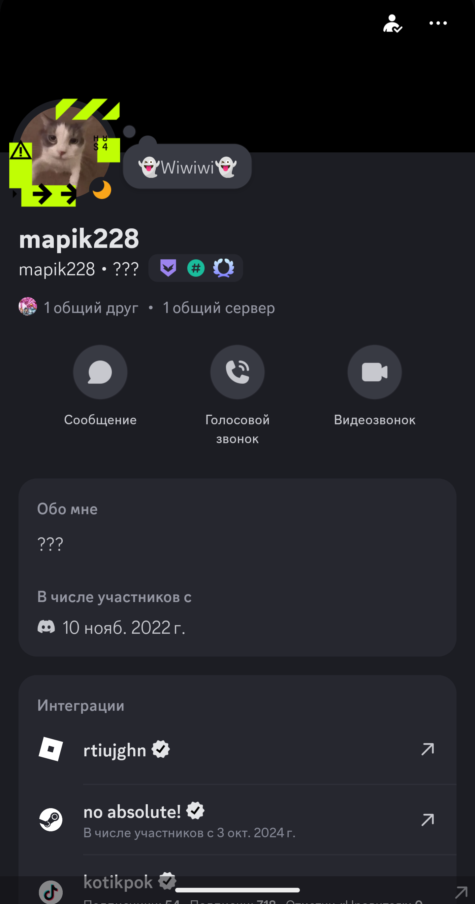

Знакомьтесь — mapik228. Человек, чей ник навсегда остался в истории Discord-серверов. Он шутит, помогает, мемит и просто живёт красиво. Кто был с ним в войсе — никогда не забудет.
Легенда среди Discord-людей
Знакомьтесь — mapik228. Человек, чей ник навсегда остался в истории Discord-серверов. Он шутит, помогает, мемит и просто живёт красиво. Кто был с ним в войсе — никогда не забудет.